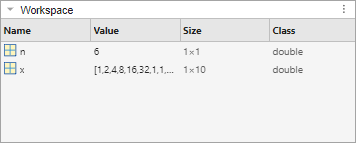
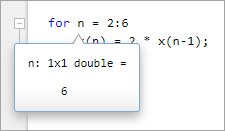

Examine Values While Debugging
When debugging a code file, you can view the value of any variable currently in the workspace while MATLAB® is paused. If you want to determine whether a line of code produces the expected result or not, examining values is useful. If the result is as expected, you can continue running the code or step to the next line. If the result is not as you expect, then that line, or a previous line, might contain an error.
View Variable Value
There are several ways to view the value of a variable while debugging:
Workspace panel — The Workspace panel displays all variables in the current workspace. The Value column of the Workspace panel shows the current value of the variable. To view more details, double-click the variable. The Variables Editor opens, displaying the content for that variable. You also can use the
openvarfunction to open a variable in the Variables Editor.
Editor and Live Editor — To view the value of a variable in the Editor and Live Editor, place your cursor over the variable. The current value of the variable appears in a data tip. The data tip stays in view until you move the cursor. If you have trouble getting the data tip to appear, click the line containing the variable, and then move the pointer next to the variable.
Data tips are always enabled when debugging in the Editor. To disable data tips in the Live Editor or when editing a file in the Editor, go to the View tab and click the Datatips button off.

You also can view the value of a variable or equation by selecting it in the Editor and Live Editor, right-clicking, and selecting Evaluate Selection in Command Window. MATLAB displays the value of the variable or equation in the Command Window.
Note
You cannot evaluate a selection while MATLAB is busy, for example, running a file.
Command Window — To view the value of a variable in the Command Window, type the variable name. For the example, to see the value of a variable
n, typenand press Enter. The Command Window displays the variable name and its value. To view all the variables in the current workspace, call thewhofunction.
View Variable Value Outside Current Workspace
When you are debugging a function or when you step into a called function or file, the Debugger panel displays the list of the functions it executed before pausing at the current line in the Function call stack section. The list, also called the function call stack, displays the functions in order, with the current script or function in which MATLAB is paused at the top of the list, and the first called script or function at the bottom of the list. (since R2025a)
To open the Debugger panel if it is not open, go to the
Editor or Live Editor tab, and in the
Analyze section, click  Debugger. You also can open the panel using the Open more
panels button
Debugger. You also can open the panel using the Open more
panels button  on a sidebar.
on a sidebar.

Before R2025a: The function call stack is shown at the top of the file and displays the functions in order, starting on the left with the first called script or function, and ending on the right with the current script or function in which MATLAB is paused.
You also can use the dbstack function to view the
current workspace in the Command
Window:
dbstack
> In mean (line 48) In plotRand (line 5)
For each function in the function call stack, there is a corresponding workspace. Workspaces contain variables that you create within MATLAB or import from data files or other programs. Variables that you assign through the Command Window or create by using scripts belong to the base workspace. Variables that you create in a function belong to their own function workspace. To examine the values of variables outside of the current workspace, select the corresponding function in the Debugger panel Function call stack section.
You also can use the dbup and dbdown functions in the Command
Window to select the previous or next workspace in the function call stack. To list
the variables in the current workspace, use the who or whos functions.
If you attempt to view the value of a variable in a different workspace while MATLAB is in the process of overwriting it, MATLAB displays an error in the Command Window.
K>> x Variable "x" is inaccessible. When a variable appears on both sides of an assignment statement, the variable may become temporarily unavailable during processing.
dbup command.